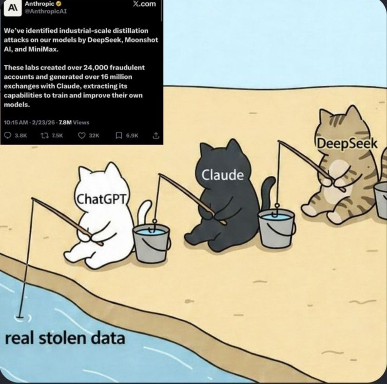

RLHF & Alignment
Teaching AI to Be Helpful , Harmless , and Honest
TAL - Day 5, Session 2March 20, 2026 | 15:45 - 17:45
Instructor: ZHANG Zheng
Welcome to our final teaching session of the course. Over the past 5 days, we have covered the full NLP stack from word embeddings to transformers, fine-tuning, RAG, and multimodal models. Today we close the loop: how do we take a pre-trained model and turn it into something that actually behaves well? This is the alignment problem, and RLHF is the key technique that made ChatGPT possible.
Session Roadmap
The Alignment Problem
RL Basics for Software Engineers
The RLHF Pipeline (3 Stages)
DPO: The Simpler Alternative
Other Alignment Methods
Safety & Responsible Deployment
The Full LLM Pipeline
Course Wrap-Up: Day 1 to Day 5
Here is our roadmap. We will start with understanding WHY alignment is necessary, learn just enough RL to understand the mechanism, walk through the full RLHF pipeline, look at modern alternatives like DPO, then discuss safety. We will finish by connecting everything from Day 1 to today. This is the capstone session.
Part 1
The Alignment Problem
Why pre-trained models are not enough
Let's start with the fundamental question: we have spent days learning how to build and train powerful language models. Why can't we just deploy them as-is?
The Gap
Pre-training Objective
"Predict the next token"
Learns everything in the data
Toxic content, misinformation, biases
No concept of "helpfulness"
Will happily generate harmful content
What Users Actually Want
"Be a good assistant"
Helpful - answer questions correctlyHarmless - refuse dangerous requestsHonest - admit uncertaintyFollow instructions accurately
This gap is the alignment problem .
A pre-trained model is optimized to predict the next token. That means it has learned everything in its training data - the good and the bad. It has no built-in preference for being helpful over being harmful. It will complete "How to make a bomb" just as readily as "How to make a cake." What users want is fundamentally different from what the training objective optimizes for. Bridging this gap is what alignment is all about.
Misalignment in Practice
Harmful outputs - generating dangerous instructions, hate speech
Hallucination - confidently stating false information
Sycophancy - agreeing with the user even when they are wrong
Refusal to engage - being overly cautious, refusing benign requests
Bias amplification - reinforcing stereotypes from training data
Key insight: alignment is not binary - it is a spectrum of trade-offs.
These are not hypothetical problems. Every deployed LLM has faced these issues. The tricky part is that fixing one problem can create another: making a model safer can make it less helpful (the refusal problem). Making it more agreeable can make it sycophantic. Alignment is about finding the right balance, and that balance depends on the use case and the values of the organization deploying the model.
"Making language models bigger does not inherently make them better at following a user's intent. [...] A 1.3B parameter InstructGPT model [is] preferred to the 175B GPT-3 model, despite having 100x fewer parameters."
-- Ouyang et al., "Training language models to follow instructions with human feedback" (2022)
Alignment > Scale (at least for user preference)
This is one of the most striking findings from the InstructGPT paper, which laid the groundwork for ChatGPT. A small aligned model can beat a much larger unaligned model in terms of user preference. This was the moment the industry realized that alignment was not just a safety concern but a product quality concern. It is not enough to scale up; you need to align.
Part 2
RL Basics for Software Engineers
Just enough to understand RLHF
Before diving into RLHF, we need a basic vocabulary from Reinforcement Learning. I promise to keep this minimal. We are not going to derive Bellman equations. We just need 5 core concepts.
RL in 5 Concepts
Agent - the decision maker (= the LLM)
Environment - the world it interacts with (= the conversation)
State - current situation (= prompt + tokens generated so far)
Action - what the agent does (= choosing the next token)
Reward - feedback signal (= "how good was this response?")
Policy π: State → Action (mapping from situations to decisions)
Think of RL like training a dog. The agent (dog) takes actions (sits, stays) in an environment (your house) based on the state (your command), and receives rewards (treats). The policy is the dog's learned behavior: when you say "sit," it sits. For LLMs, the policy IS the model itself. Given a prompt (state), it chooses tokens (actions), and we want to reward it when the full response is good. The key difference from supervised learning: in RL, we do not tell the model WHAT to say, we tell it HOW GOOD what it said was.
The Software Engineering Analogy
Supervised Learning
Like a code review with corrections
"Here is exactly what you should have written"
Explicit correct answers
Learn by imitation
Reinforcement Learning
Like a performance review with a score
"Your code scored 8/10 this quarter"
Only a quality signal, no corrections
Learn by trial and error
RLHF = human preferences provide the reward signal
Here is an analogy that might resonate with software engineers. Supervised learning is like pair programming where someone shows you the right code. Reinforcement learning is like getting a performance review: nobody tells you exactly what to do, they just tell you how well you did. You have to figure out on your own what to change. RLHF is special because instead of a programmatic reward function, we use human judgments as the reward signal.
Part 3
The RLHF Pipeline
Three stages to align a language model
Now for the main event. The RLHF pipeline, as described in the InstructGPT paper, has three distinct stages. Each builds on the previous one. Let's walk through them.
RLHF: Three Stages
1
Supervised Fine-Tuning (SFT)
Fine-tune base model on human-written demonstrations
↓
2
Reward Model Training
Train a model to predict which responses humans prefer
↓
3
RL Optimization (PPO)
Optimize the LLM to maximize the reward model's scores
Ouyang et al. (2022) - "Training language models to follow instructions with human feedback"
Here is the full picture. Stage 1: we fine-tune the base model on high-quality demonstrations so it learns the FORMAT of good responses. Stage 2: we train a separate reward model that can score any response based on human preferences. Stage 3: we use RL (specifically PPO) to optimize the language model to get high scores from the reward model. Each stage is essential. Let's dive into each one.
Stage 1 : Supervised Fine-Tuning
What happens
Collect demonstration data
Human labelers write ideal responses to prompts
Fine-tune the pre-trained model on these examples
Standard cross-entropy loss
Why it matters
Teaches the model the response format
Shifts distribution toward helpful behavior
Creates a strong starting point for RL
InstructGPT: ~13K demonstrations
Loss = -∑ log P(tokeni | prompt, token1..i-1 )
Same fine-tuning you learned on Day 3 - nothing new here!
Stage 1 is actually something you already know: supervised fine-tuning. We collect high-quality prompt-response pairs written by human experts, and we fine-tune the base model on them. This is the same process as instruction tuning. The key insight is that SFT alone is limited: you can only teach the model to imitate the specific demonstrations you have. It cannot generalize well to the full space of desired behaviors. That is why we need stages 2 and 3.
Stage 2 : Reward Model TrainingInstead of writing ideal responses, humans compare responses
Response A (Winner)
"Paris is the capital of France. It is located in the north-central part of the country along the Seine River."
Response B (Loser)
"France's capital is probably Paris or maybe Lyon. I'm not entirely sure but it could be either one."
Key insight : comparing is much easier than writing
InstructGPT: ~33K comparison pairs from ~40 labelers
This is the clever part. Instead of asking humans to write perfect responses (which is expensive and hard), we ask them a much simpler question: "Given these two responses, which one is better?" This pairwise comparison approach is cheaper, faster, and more consistent across labelers. We then train a reward model to predict these preferences, essentially learning a scoring function that captures what humans value.
Bradley-Terry Preference Model
How do we turn pairwise comparisons into a reward model?
P(A > B) = σ(r(A) - r(B))
σ = sigmoid function (squash to probability)
r(A) = reward model's score for response A
r(B) = reward model's score for response B
Loss = -log σ(r(winner) - r(loser))
Same idea as Elo ratings in chess: higher score = more likely to win
The Bradley-Terry model is a classic statistical model for pairwise comparisons - think chess Elo ratings. The probability that response A is preferred over B is a sigmoid of the difference in their scores. The loss function simply pushes the winner's score higher and the loser's score lower. Software engineers will recognize this as essentially binary cross-entropy, where we are classifying which response is the winner. The reward model is typically initialized from the SFT model with a linear head that outputs a scalar score.
Stage 3 : RL Optimization with PPO
Prompt
→
LLM generates response
→
Reward Model scores it
→
Update LLM weights
PPO (Proximal Policy Optimization):
Repeat: generate, score, update
Small, stable weight updates (the "proximal" part)
Widely used in game AI (OpenAI Five, etc.)
Objective = Reward(response) - β * KL(policy || SFT_model)
Stage 3 is where the magic happens. We run the LLM to generate responses to prompts, score those responses with the reward model, then update the LLM weights to increase the expected reward. PPO is the specific RL algorithm used: it is designed for stability, making small controlled updates so the model does not change too dramatically in any single step. But notice the KL divergence term in the objective - that is critical.
The KL Divergence Constraint
Why not just maximize the reward?
Without KL penalty
Model "hacks" the reward model
Generates gibberish that scores high
Reward hacking / mode collapse
Loses language ability
With KL penalty
Model stays close to SFT baseline
Preserves language fluency
Learns to be better, not different
β controls the trade-off
Think of it as a leash : the model can improve, but cannot wander too far from the SFT model.
This is one of the most important ideas in RLHF. If you purely maximize the reward model's score, the LLM will find exploits. Just like in game AI where agents find ridiculous glitch strategies to maximize score, the LLM can learn to produce outputs that "hack" the reward model - getting high scores while producing nonsensical text. The KL divergence penalty acts as a leash, saying "stay close to the SFT model." The beta hyperparameter controls how long this leash is. Too small beta: reward hacking. Too large beta: no improvement. Getting this right is a key engineering challenge.
Part 4
DPO: Direct Preference Optimization
The simpler alternative that's changing the field
RLHF with PPO works, but it is complex and finicky. In 2023, a team from Stanford proposed a radically simpler approach that achieves similar results. Let's see how.
DPO: Skip the Reward Model
Rafailov et al. (2023) - "Direct Preference Optimization"
RLHF (3 stages)
1. SFT
↓
2. Train Reward Model
↓
3. PPO Optimization
DPO (2 stages)
1. SFT
↓
2. Direct Optimization from Preferences
(no separate reward model!)
The key insight of DPO is mathematical: you can derive a closed-form solution for the optimal policy given preference data, which eliminates the need for a separate reward model AND the entire PPO RL loop. Instead of three stages, you only need two. The result is a much simpler training pipeline that can be implemented as a straightforward fine-tuning objective.
DPO: The Intuition
Key insight : there is an analytical mapping between reward functions and optimal policies
Instead of:
Preferences → Reward Model → RL → Better Policy
DPO does:
Preferences → Better Policy (directly!)
Loss = -log σ(β * (log π(yw |x)/πref (yw |x) - log π(yl |x)/πref (yl |x)))
yw = winning response, yl = losing response, πref = SFT model
The DPO loss function looks complicated but the idea is simple: increase the probability of the winning response relative to the reference model, and decrease the probability of the losing response. The beta parameter plays the same role as in RLHF, controlling how far the model can drift from the reference. The beauty is that this is just a classification-style loss - you can train it with standard gradient descent, no RL algorithms needed. For software engineers: think of it as a modified cross-entropy loss that operates on pairs of responses.
DPO vs PPO
Aspect
PPO-based RLHF
DPO
Models needed
4 (policy, ref, reward, critic)
2 (policy, reference)
Training stability
Sensitive to hyperparameters
Much more stable
GPU memory
Very high (4 models)
Lower (2 models)
Implementation
Complex RL infrastructure
Simple fine-tuning loop
Online exploration
Yes (generates new responses)
No (offline, fixed dataset)
At scale (frontier)
Proven at largest scale
Increasingly adopted
Let's compare the two approaches head-to-head. DPO wins on simplicity: fewer models, more stable training, less GPU memory, simpler implementation. PPO's advantage is online exploration - it generates new responses during training, which can help it discover better strategies. At the frontier scale of labs like OpenAI and Anthropic, PPO-style approaches still dominate because the exploration matters when you are pushing the boundary. But for most practical applications, DPO is the go-to choice. Many open-source models are now aligned using DPO.
Part 5
Other Alignment Methods
The field is evolving rapidly
RLHF and DPO are the workhorses, but the alignment field is evolving quickly. Let's survey some other important approaches.
Beyond Human Feedback
RLAIF
AI feedback instead of human feedback
Use a strong LLM to evaluate responses
Much cheaper and faster to scale
Can approach human-quality feedback
Risk: inherits the judge model's biases
Constitutional AI
Self-critique with principles (Bai et al. 2022)
Define a "constitution" of rules
Model critiques its own outputs
Revises based on principles
Used by Anthropic for Claude
Both reduce dependence on expensive human labeling
RLAIF replaces human annotators with AI evaluators. Google showed this can work surprisingly well. The key risk is that the AI judge has its own biases, which then get amplified. Constitutional AI, developed by Anthropic, is a different approach: instead of external feedback, the model critiques itself according to a set of principles (the "constitution"). For example, a principle might be "Choose the response that is less harmful" or "Choose the response that is more honest." The model generates, self-critiques, and revises. This approach was used to train Claude.
The Expanding Landscape
Method
Key Idea
Advantage
KTO Uses thumbs up/down (not pairs)
Simpler data collection
IPO Fixes DPO's overfitting issues
Better generalization
ORPO Combines SFT + preference in one step
Single-stage training
GRPO Group relative policy optimization
No critic model needed
Online DPO DPO with online generation
Best of both worlds
The trend: simpler training, less infrastructure, comparable results
This is a rapidly evolving field. KTO is notable because it only needs binary thumbs up/down feedback, not pairwise comparisons, making data collection much cheaper. IPO addresses some theoretical shortcomings of DPO. ORPO merges SFT and preference optimization into a single stage. GRPO, used by DeepSeek, eliminates the critic model from PPO. Online DPO combines DPO's simplicity with PPO's online exploration. The overall trend is toward simpler, cheaper alignment methods that still produce high-quality results. For your projects, DPO is likely the practical choice.
RLVR: Verifiable Rewards
Reinforcement Learning with Verifiable Rewards (DeepSeek-R1, 2025)
RLHF
Reward from human preferences
Subjective judgments
Expensive to scale
Best for open-ended tasks
ChatGPT, Claude
RLVR
Reward from verifiable outcomes
Objective ground truth
Infinitely scalable
Best for math, code, reasoning
DeepSeek-R1, o1/o3
Generate solution
→
Execute / Verify
→
✓ Correct = +1 | ✗ Wrong = 0
No human labeling needed — the environment provides the reward
RLVR is a breakthrough from DeepSeek that powered their R1 reasoning model. The key insight: for tasks like math and code, you don't need humans to judge quality — you can just RUN the code or CHECK the math. If the answer is correct, reward = 1; if wrong, reward = 0. This is infinitely scalable because you can generate unlimited training data. DeepSeek-R1 used pure RLVR (no human preference data at all for the reasoning component) and achieved results competitive with OpenAI's o1. This approach is especially powerful for reasoning tasks where correctness is objectively verifiable.
RLVR: How It Works
Math problems : Compare final answer to ground truthProblem → LLM generates solution → Extract answer → Check against answer key
Code generation : Run test casesSpec → LLM writes code → Execute against unit tests → Pass/fail reward
Formal proofs : Proof checker verificationTheorem → LLM generates proof → Lean/Coq verifier → Valid/invalid
Key advantage : can train on millions of problems without any human annotation
DeepSeek-R1 trained on hundreds of thousands of math/code problems with pure RLVR
Source: DeepSeek-R1 Paper (January 2025)
Let's see concrete examples. For math: you have a dataset of problems with known answers. The model generates a solution with reasoning steps, you extract the final answer, and compare to ground truth. For code: the model generates a function, you run it against unit tests. For formal proofs: you use a proof assistant like Lean to check validity. The beauty is that you can generate unlimited training problems programmatically, run RL at massive scale, and never need a human to look at a single response. This is why DeepSeek could train a model that rivals o1 with far less human annotation. The limitation: only works for tasks with verifiable answers.
Part 6
Safety & Responsible Deployment
Alignment is necessary but not sufficient
RLHF and DPO align the model's behavior, but deployment safety requires additional layers. Let's look at the practical safety measures used in production systems.
The Safety Stack
🛡
Red Teaming
⚠
Jailbreaking & Guardrails
🔍
Content Filtering
✅
Responsible Deployment
Think of safety as defense in depth. RLHF is the first line of defense, training the model to behave well. Red teaming is the second: systematically trying to break the model before users do. Guardrails are runtime protections, filtering inputs and outputs at the API level. Content filtering catches things the model's alignment training missed. And responsible deployment means staged rollouts, monitoring, and having a plan for when things go wrong. No single layer is sufficient; you need all of them.
Distillation Attacks: A Real Case
February 2026 — Anthropic's accusation
Anthropic accused: 24,000 fraudulent accounts16 million exchanges with Claude
The concern:
Distilled models may lose safety guardrails
Capability without alignment = dangerous
Potential national security risks

The irony: who owns "internet data"? 🎣
This is a real case from February 2026. Anthropic publicly accused three Chinese AI companies of systematic distillation attacks on Claude. They claim 24,000 fake accounts made 16 million API calls to extract Claude's capabilities.
The meme captures the irony beautifully: all LLMs are trained on internet data scraped without explicit permission. Now companies are accusing each other of "stealing" model outputs.
But there's a serious concern here: when you distill a model, you often lose the safety training. A distilled model might have the capabilities but not the guardrails. This is a genuine safety risk.
Discussion questions: Is distillation "stealing"? Who owns model outputs? How do you protect against this while keeping APIs accessible?
Discussion
The alignment tax and trade-offs
Helpfulness vs. Safety Overly safe models refuse legitimate requests (the "sorry, I can't help" problem)
Whose values? Different cultures, contexts, and users have different preferences
Open vs. Closed alignment Should alignment details be public? Safety vs. transparency
These are engineering trade-offs , not just philosophical debates.
Take a moment to consider these trade-offs. There is a real tension between helpfulness and safety: Claude and ChatGPT have both been criticized for being too cautious. Whose values should be encoded? A model trained on American preferences may not serve users in other cultures well. And there is a transparency question: publishing alignment methods helps researchers but also helps adversaries. As engineers building products with LLMs, you will face these trade-offs directly. There are no perfect answers, only thoughtful engineering decisions.
Part 7
The Full LLM Training Pipeline
Putting it all together
We have now covered every piece of the puzzle. Let's put it all together into one comprehensive view of how modern LLMs are built from scratch to deployment.
From Raw Data to Deployed Model
Pre-training
Trillions of tokens
→
SFT
~10-100K demonstrations
→
RLHF / DPO
Preference data
→
Deployment
Safety filters
Pre-training : general knowledge & language ability
SFT : learn to follow instructions
RLHF/DPO : align with human preferences
Deployment : safety layers & monitoring
Here is the complete picture. Pre-training gives the model its knowledge and language abilities - this is the most expensive phase, costing millions of dollars for frontier models. SFT teaches the model the format of good responses. RLHF or DPO aligns it with human values and preferences. Deployment adds runtime safety measures. Each stage is essential and builds on the previous one. When you hear about "GPT-4" or "Claude", what you are interacting with is the result of ALL of these stages combined.
Part 8
Course Wrap-Up
Connecting the dots: Day 1 to Day 5
This is the final section of our final teaching session. Let's step back and see the full journey we have taken over these 5 days.
Our Journey
Day 1
NLP Foundations
→
Day 2
Transformers
→
Day 3
Fine-Tuning
→
→
Day 1 : How do we represent language? (tokens, embeddings)
Day 2 : How do models understand context? (attention, transformers)
Day 3 : How do we adapt models? (fine-tuning, prompting)
Day 4 : How do we add knowledge and modalities? (RAG, vision)
Day 5 : How do we make models useful and safe? (agents, RLHF)
Look at how far we have come. On Day 1, we started with the basics: how do you represent words as numbers? We learned about tokenization, Word2Vec, and embeddings. Day 2 introduced the Transformer architecture and the attention mechanism that revolutionized NLP. Day 3 showed how to adapt pre-trained models to specific tasks through fine-tuning and prompting. Day 4 extended models with external knowledge (RAG) and multimodal capabilities. And today, Day 5, we covered how to deploy models as agents and align them with human values. Each piece builds on the ones before it.
The Complete NLP Stack
Foundation : Tokenization → Embeddings → Contextual Representations
Architecture : Self-Attention → Transformers → Encoder/Decoder variants
Training : Pre-training → SFT → RLHF/DPO
Adaptation : Prompting → Fine-tuning → RAG → Tool Use
Deployment : Safety → Guardrails → Monitoring → Agents
You now understand every layer of this stack.
This is the complete NLP stack as it exists today. At the foundation level, we have tokenization and embeddings. The architecture layer is dominated by Transformers. The training pipeline goes from pre-training through alignment. Adaptation techniques let us customize models for specific use cases. And the deployment layer adds safety and agent capabilities. You now have a mental model for every single layer. When you read a paper about a new technique, you can place it in this stack. When you build a product with LLMs, you know what is happening at each level.
Key Papers & References
InstructGPT - Ouyang et al. (2022)"Training language models to follow instructions with human feedback"
DPO - Rafailov et al. (2023)"Direct Preference Optimization: Your Language Model is Secretly a Reward Model"
Constitutional AI - Bai et al. (2022)"Constitutional AI: Harmlessness from AI Feedback"
PPO - Schulman et al. (2017)"Proximal Policy Optimization Algorithms"
RLAIF - Lee et al. (2023)"RLAIF: Scaling Reinforcement Learning from Human Feedback with AI Feedback"
Here are the key papers for today's topics. The InstructGPT paper is the foundational RLHF work. The DPO paper is the must-read for the simpler alternative. Constitutional AI explains Anthropic's approach. PPO is the underlying RL algorithm. And the RLAIF paper shows how AI feedback can scale alignment. I recommend reading InstructGPT and DPO first - they are well-written and accessible to software engineers.
Demo Day
Tomorrow: show what you have built!
Present your project to the class
Demonstrate your NLP application working
Explain the technical choices you made
Connect your work to concepts from the course
Think about: which parts of the NLP stack does your project use?
Tomorrow is Demo Day. This is your chance to show off what you have built during the course. When you present, I encourage you to connect your project back to what we have learned. Which parts of the NLP stack are you using? Did you use embeddings, fine-tuning, RAG, prompting, agents? Understanding WHERE your project sits in the stack shows deep understanding.
Thank You
From word vectors to aligned AI in 5 days
The field is moving fast.
The fundamentals you learned will stay relevant.
Keep building, keep learning.
Good luck on Demo Day!
TAL - ZHANG Zheng - March 2026
That concludes our final teaching session. We have covered an incredible amount of ground in 5 days: from the basic building blocks of NLP to the cutting-edge alignment techniques that make models like ChatGPT and Claude possible. The field is moving fast, but the fundamentals we covered - embeddings, attention, transformers, fine-tuning, alignment - these are the foundation that everything builds on. Good luck on Demo Day tomorrow. I am looking forward to seeing what you have built!